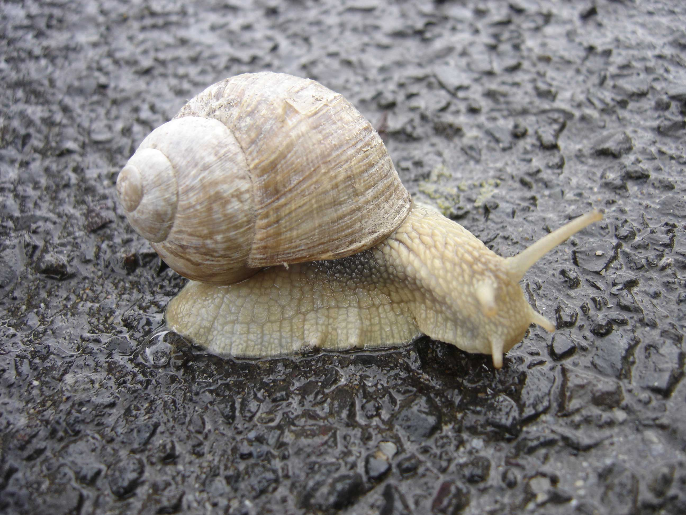

Snail
| Snail Types | Color |
|---|---|
| Garden Snail | Brown |
| Sea Snail | White |
Overview
Snails that respire using a lung belong to the group Pulmonata. As traditionally defined, the Pulmonata were found to be polyphyletic in a molecular study per Jörger et al., dating from 2010.[3] But snails with gills also form a polyphyletic group; in other words, snails with lungs and snails with gills form a number of taxonomic groups that are not necessarily more closely related to each other than they are related to some other groups. Both snails that have lungs and snails that have gills have diversified so widely over geological time that a few species with gills can be found on land and numerous species with lungs can be found in freshwater. Even a few marine species have lungs. Snails can be found in a very wide range of environments, including ditches, deserts, and the abyssal depths of the sea. Although land snails may be more familiar to laymen, marine snails constitute the majority of snail species, and have much greater diversity and a greater biomass. Numerous kinds of snail can also be found in fresh water. Most snails have thousands of microscopic tooth-like structures located on a banded ribbon-like tongue called a radula. The radula works like a file, ripping food into small pieces. Many snails are herbivorous, eating plants or rasping algae from surfaces with their radulae, though a few land species and many marine species are omnivores or predatory carnivores. Snails cannot absorb colored pigments when eating paper or cardboard so their feces are also colored.[4] Several species of the genus Achatina and related genera are known as giant African land snails; some grow to 15 in (38 cm) from snout to tail, and weigh 1 kg (2 lb).[5] The largest living species of sea snail is Syrinx aruanus; its shell can measure up to 90 cm (35 in) in length, and the whole animal with the shell can weigh up to 18 kg (40 lb). Recently, the smallest land snails, Angustopila dominikae, have been discovered in China, and measure 0.86mm long.[6]
Types of snails by habitat
Main articles: Land snail, Freshwater snail, and Sea snail
A snail is, in loose terms, a shelled gastropod. The name is most often applied to land snails, terrestrial pulmonate gastropod molluscs. However, the common name snail is also used for most of the members
 Go to the bottom of page


PNG - Portable Network Graphics - Only for screen use, transparent property that is called alpha
JPG - Joint Photographic Experts Group - For photographs, you can print, don't have a transparency
GIF - Graphics Interchange Format - animated, more than one frame
SVG - Scalable Vector Graphics - can scale at any size, good for logos
 Snails that respire using a lung belong to the group Pulmonata. As traditionally defined, the Pulmonata were found to be polyphyletic in a molecular study per Jörger et al., dating from 2010.[3] But snails with gills also form a polyphyletic group; in other words, snails with lungs and snails with gills form a number of taxonomic groups that are not necessarily more closely related to each other than they are related to some other groups.
Snails that respire using a lung belong to the group Pulmonata. As traditionally defined, the Pulmonata were found to be polyphyletic in a molecular study per Jörger et al., dating from 2010.[3] But snails with gills also form a polyphyletic group; in other words, snails with lungs and snails with gills form a number of taxonomic groups that are not necessarily more closely related to each other than they are related to some other groups.
Bottom of page
Go to top of page Go to middle of page- This is the innerHTML
- This is the innerHTML
- How much flour for two cakes:
twoCakes will go here